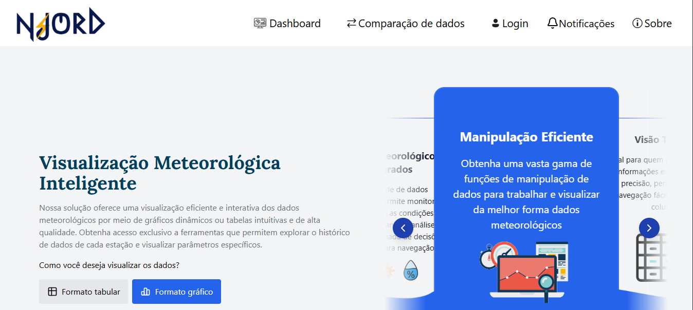

Njord é uma plataforma moderna de monitoramento climático desenvolvida para oferecer informações precisas e acessíveis sobre as condições meteorológicas da região. Com foco na segurança dos navegantes e na confiabilidade dos dados, a aplicação une tecnologia e usabilidade para facilitar a tomada de decisões em tempo real.
Site voltado para nutrição que oferece uma experiência de resultados incríveis. A plataforma foi projetada para ser intuitiva e acessível, permitindo que os usuários sejam auxiliados e melhorem seus hábitos de alimentação, contribuindo assim para uma melhor qualidade de vida e bem-estar.